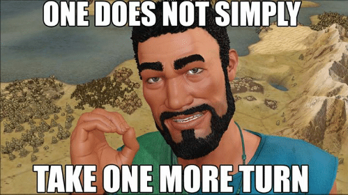

IF or intermittent fasting, the idea that one consumes all of their specified number of calories in a confined eating window and fast the rest of the day. There are many variances in this eating window from 12-12 (12 hours of fasting and a 12 hour eating window) to OMAD(One Meal A Day) and anywhere in between 16-8, 20-4, etc. With my basketball career coming to a swift end and my athletic shape on the line I was looking for a way to maintain. I wanted to maintain my lifestyle and weight without keeping up with the amount of cardio that comes with being a college basketball player. After an insane amount of long and intense research (a youtube video maybe two) I landed on IF and decided to roll the dice on it. The first 2 weeks of IF are (insert witty statement about difficulty) it really sucks. You're going ot have to increase your video game consumption during your fasting time to keep the mind pre-occupied. Luckily most video games continue to be 0 calories on consumption, especially if you opt out of the impulse pizza order to pair with them. Fortunately, after about 2 weeks the mind no longer increases the emotional reaction to an empty stomach. You can eradicate hangriness from your life.
Going from a high volume of cardio to none and switching to IF with no diet change resulted in 0 weight gain. For 9 months this remained true for me. After 9, I switched from 16-8 window to 20-4 for 3 months and lost 10 lbs most of which appeared to be fat as my strength numbers remained stagnant.
There are many scientific concepts/benefits connected with IF that I am far too dumb to understand. They suggest IF provides several health benefits: Reducing insulin response, giving your digestive system a break for long periods of time, cutting down on inflammation, triglyceride reduction, weight loss, and more. Regardless of any conflicting evidence that I'm sure is available in mass on the internet these are things I know for certain based off of personal experience. Partaking in IF will make you become more conscientious of what you're eating. You think about when you can and can't eat. Another absolute side effect of IF is it helps restrict overall calories. As someone who developed a habit of eating a large amount of calories being a college athlete IF helps break that habit. It becomes so much more difficult to eat the same amount of calories in 4 hours as you were accustomed to consuming in the natural 14-18 hour eating window you have by just being conscious. If your worried about gaining weight give IF a shot or don't. What the fuck do I know?
Sid Meier and team, continue to improve upon the world's first time machine. It's not quite the product that sci-fi writers have been dreaming up for decades, but it is a damn good first step. It remains one of the first times in human history where you can take a modern PC and convert its power to for time travel. Upon starting up the software you can jump back in time as far back as the ancient era to rediscover the wonders of our ancestors while simultaneously traveling hours or, more dangerously, days into the future of our modern Gregoriana> timeline.
The new addition Gathering Storm throws in more natural frustrations and boosts the killing of our indefinite continued progress of existence via an intense addictive mechanism colloquially named "one more turn..".

Some of the new leaders and Civs: Canada, Maori, Inca, etc. provide even more dynamic game play. Some things that can be added to the growing list of pleasing events in the Civ are tunneling through an expansive mountain range and releasing an army onto the land of the naturally "protected" enemy city or building your first hockey rink as Wilfrid Laurier and smiling about how much fun those crazy Canucks must be having down there. Of course these great feelings are only heightened by the new lows incorporated into the game like choosing the Maori and taking 12 turns to find your first piece of land to later find it was probably 2 the other direction to a Great Barrier Reef starting position or, I don't know, a tornado that perfectly zig-zags it's way to the destruction of your only three cities. Most of the added disasters can be anticipated. The game provides some very good indicators and most can be used to develop preventative measures like don't build a library next to a volcano or leave your army on a Tsunami prone peninsula or just build that dang dam to mitigate the flood waters, but apparently no matter how advanced we become as a race humans will always be plagued by the random and impending doom of the almighty tornado. Overall, I love the additions and whenever I need transport several hours into the future Civ VI is always my go to. Whether it be when I'm stuck at the airport waiting for a delayed flight, proving dominance against my friends across the country all weekend or sometimes even on a week night when I want to realise it's 6am I jumped through the night with no sleep and have an hour to hat myself at work for a day.
A generation ago, the astronomer Carl Sagan stood here and launched hundreds of millions of us on a great adventure the exploration of the universe revealed by science. It's time to get going again. We're about to begin a journey that will take us from the infinitesimal to the infinite, from the dawn of time to the distant future. We'll explore galaxies and suns and worlds, surf the gravity waves of space-time, encounter beings that live in fire and ice, explore the planets of stars that never die, discover atoms as massive as suns and universes smaller than atoms.
COSMOS IS ALSO A STORY ABOUT US
It's the saga of how wandering bands of hunters and gatherers found their way to the stars, one adventure with many heroes. To make this journey, we'll need imagination. But imagination alone is not enough because the reality of nature is far more wondrous than anything we can imagine. This adventure is made possible by generations of searchers strictly adhering to a simple set of rules test ideas by experiment and observation, build on those ideas that pass the test, reject the ones that fail, follow the evidence wherever it leads and question everything. Accept these terms, and the cosmos is yours.
Duke and Kentucky, famously stockpile McDonald’s All-Americans for their glorious — if brief — college layover, something seems amiss.
It ain’t working. Not in late March, anyway.
You may have noticed Duke and Kentucky are not at the Final Four. Neither has made it since 2015. But consider the lineups that will be in Minneapolis this weekend. Twenty starters for Auburn, Michigan State, Texas Tech and Virginia – 14 juniors and seniors, two freshmen. Two. Michigan State’s Aaron Henry and Virginia’s Kihei Clark.
“Everybody would like to have what Duke and Kentucky have as personnel,” Michigan State’s Tom Izzo was saying. “Both of them have had incredible years, but experience does matter, too, you know.”